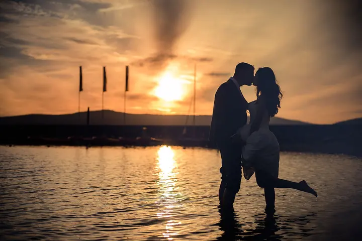
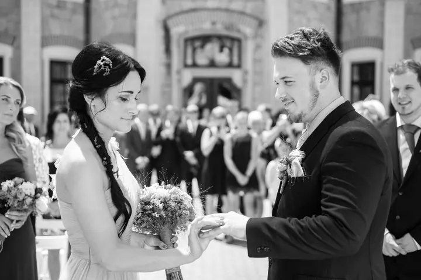

jedna
Svatby ve dvou
Celý svatební den fotíme dva, já a moje manželka Alča, takže máme pokryté hlavní dění i drobné momenty v pozadí. K fotkám nabízíme fotokoutek vedený fotografkou a krátký 2–3minutový video highlight.

Svatební fotograf z jižních Čech · Jižní Čechy, celá ČR, zahraničí

Jmenuji se Jiří Tvaroh a svatby fotím po celé ČR i v zahraničí. Na svatbě ale nejsem sám, pracujeme ve dvou s mou manželkou Alčou. Dva páry očí lépe ohlídají hlavní dění i drobné momenty v pozadí.
Více o mně
Co fotím
jedna
Celý svatební den fotíme dva, já a moje manželka Alča, takže máme pokryté hlavní dění i drobné momenty v pozadí. K fotkám nabízíme fotokoutek vedený fotografkou a krátký 2–3minutový video highlight.
Fotokurzy v Českých Budějovicích pořádám od roku 2012 v malých skupinách po 6–8 lidech: pro začátečníky, pro pokročilé a mobilní fotokurz. Pořádám i fotovýlety a individuální konzultace, další workshopy pak vedu v Praze.
Portrétní focení, při kterém se nemusíte bát pózování. Ukážu vám, že focení může být zábavné a uvolněné.
Fotím reklamu a reportáže z akcí. Z kurzů pro pokročilé znám i focení v náročných podmínkách, třeba v divadle nebo při sportu v hale.

Pohled, úsměv, letmý dotek.


Za objektivem
Svatby fotím přes 15 let, nejčastěji v jižních Čechách, ale rád za vámi přijedu i na druhou stranu republiky nebo za hranice. Fotil jsem v kulturním sále v Lišově, na zámku Hluboká i na horách kolem rakouského Flachau.
Celý den se mnou fotí moje manželka Alča, fotografka a asistentka v jedné osobě. Díky tomu můžeme být novomanželům i hostům k ruce v situacích, které během dne přirozeně vznikají. Alča navíc vede fotokoutek, kde vznikají přirozené portréty hostů místo automatické fotobudky.
Myslíte si, že nejste fotogeničtí, nebo vás představa pózování děsí? Rádi vám ukážeme, že focení může být zábavné a uvolněné. Mimo svatby od roku 2012 vedu v Českých Budějovicích fotokurzy, takže fotografii rád předávám dál.
Jiří
Potkáme se osobně nebo online, probereme vaše představy a odpovíme na otázky. Na vámi vybraném místě jsme často už fotili, a tak vám můžeme ukázat skutečné fotky z dřívějších svateb.
Focení naplánujeme společně tak, aby svatební den proběhl hladce a aby se cítili dobře i vaši hosté.
Celý den fotíme dva, já a Alča. Zachytíme hlavní dění i momenty v pozadí a k tomu přirozené portréty hostů ve fotokoutku.
Dostanete hotové fotografie a k nim můžete mít i krátký 2–3minutový video highlight, který zachytí pohyb a atmosféru dne.
Portfolio
Otázky
Ne. Sídlíme u Českých Budějovic, ale fotíme po celé ČR i v zahraničí. Rádi za vámi přijedeme i na druhý konec republiky.
Dva fotografové zvládnou hlavní dění i drobné momenty v pozadí zároveň a pomůžou vám i v situacích, které během dne přirozeně vznikají.
Vůbec ne. Ukážeme vám, jak může být focení zábavné a uvolněné, a o nervozitu přijdete dřív, než čekáte.
Ano, k fotkám nově připravujeme krátký 2–3minutový video highlight, který zachytí pohyb a atmosféru dne.
Napište pár vět o tom, co si představujete. · +420 777 086 431